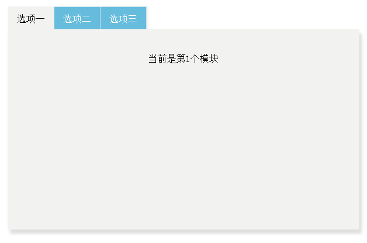

Tab选项卡的实现
采用原生的JS
实现效果

实现过程
采用原生的JS，定义一个函数Tab()，传入的参数为一个对象，该对象带入需要创建tab组件的ID,默认标签页，以及标签页切换的触发函数，以及回调函数
回调函数真是一个太神奇的东西，尽管在这个tab的例子里面使用了回调函数，但是还是很不理解回调函数的使用方式。这里给出一个简单的说法：如果一个函数a的参数是一个函数B，那么可以在A里面调用这个函数B，还可以给B传参数，那么这个B就是回调函数。大概就是如果一个参数是函数，那么这个函数就是回调函数啪啪啪
继续回到我们的Tab函数中，传入参数之后需要对参数做一个验证（划重点！刚开始我也没有验证，但是验证这一种思想还是很重要的，不管是在实现什么的情况下，拿到参数的时候要习惯性地验证一下）。验证参数无误之后再继续往下执行。这个时候如果参数不符合规则，那么就会在console控制台输出相应的错误，页面上的tab组件也不会有交互效果。
如果参数验证无误，那么就开始拿取元素，首先需要拿取显示选项卡具体内容的div，然后给这个div创建一个子元素div，给一个子div一个特别的类名。这个类名的生成是依据传入的tab组件的id来创建的。这样就保证了每一个tab组件都有一个特殊的可以插入内容的div.这里可以进行一个优化，比如不需要创建子元素，直接给原来的内容div一个特殊的类名也是可以的
然后就是给每一个标签按钮绑定事件啦。因为tab组件比较特殊，不需要动态生成标签按钮，所以在HTML页面上直接确定好需要多少个标签卡，然后遍历一遍ul给每一个li都绑定上事件处理便可。